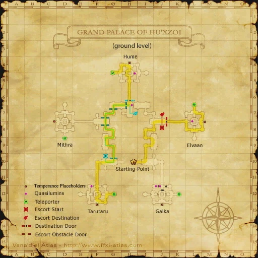
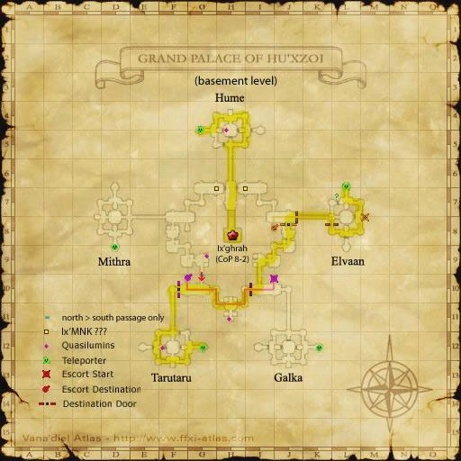

Description
Grand Palace of Hu'Xzoi is a dungeon in Lumoria.
Map

Involved in Quests / Missions
| Quest / Mission | Type | Starter | Location |
|---|---|---|---|
| In the Name of Science | General | Yurim | Tavnazian Safehold (J-8) |
NPCs
| Name | Location | Type |
|---|---|---|
| Quasilumin x10 | — | — |
| Goblin Footprint | — | Melody Minstrel |
Notorious Monsters
| Name | Level | Drops | Steal | Family | Spawns | Notes |
|---|---|---|---|---|---|---|
| Ix'aern (Monk) | 80 | Deed of Placidity Vice of Antipathy | — |  AernImage source AernImage source | — | Assisted by Qn'aern (77) |
| Jailer of Temperance | 85 | First Virtue Temperance Axe Temperance Torque | — |  ZdeiImage source ZdeiImage source | — | — |
Regular Monsters
| Name | Level | Drops | Steal | Family | Spawns | Notes |
|---|---|---|---|---|---|---|
| Eo'aern | 79-81 | Aern Organ Crystal Clusters High-Quality Aern Organ Luminian Tissue | — | AernImage source | 95 | L, H |
| Eo'euvhi | 74-76 | Crystal Clusters Euvhi Organ Luminian Tissue | — |  EuvhiImage source EuvhiImage source | 73 | A, T(H) (open); L, T(H) (closed) |
| Eo'ghrah | 75-77 | Crystal Clusters Ghrah M Chip Luminion Chip | — |  GhrahImage source GhrahImage source | 29 | A*, T(H) |
| Eo'zdei | 76-78 | Luminion Chip | — | ZdeiImage source | 93 | A, T(S) |
Event Monsters
| Name | Level | Drops | Steal | Family | Spawns | Notes |
|---|---|---|---|---|---|---|
| Ix'ghrah | — | — | — | GhrahImage source | 1 | Spawned Mission: A Fate Decided |
Maps

Story walkthroughs in this area
| Story | Mission / quest |
|---|---|
| RoZ Q3 | Apocalypse Nigh |
| CoP 8-1 | Garden of Antiquity |
| CoP 8-2 | A Fate Decided |
References
External references describe their own server or retail rules. Documented Zenith changes take precedence.
Map credits: Map 1 — HorizonXI Wiki · Map 2 — HorizonXI Wiki · Map 3 — HorizonXI Wiki. Original game maps © SQUARE ENIX; redrawn maps retain the credited authorship and license.


Additional level-75 reference


This area is part of the Celestial Capital of Al'Taieu.
This area is only accessible if the Chains of Promathia expansion is installed and Promathia Mission 8-1: The Garden of Antiquity is completed.
Connecting Areas
Involved in Quests/Missions
| Mission | Country | Starter | Location |
| Mission 8-1:The Garden of Antiquity | Promathia | --- | --- |
| Mission 8-2: A Fate Decided | Promathia | --- | --- |
NPCs Found Here
|
Repeating CutscenesYou can repeat cutscenes at the Goblin Footprint just to the west of the entrance from Al'Taieu.
|
Notorious Monsters Found Here
|
Name |
Level |
Drops |
Steal |
Family |
Spawns |
Notes | |||||||
| Ix'aern (Monk) |
80 |
Aern |
1 |
||||||||||
| Jailer of Temperance |
85 |
Zdei |
1 |
||||||||||
|
HP = Detects Low HP; M = Detects Magic; Sc = Follows by Scent; T(S) = True-sight; T(H) = True-hearing JA = Detects job abilities; WS = Detects weaponskills; Z(D) = Asleep in Daytime; Z(N) = Asleep at Nighttime | |||||||||||||
Mobs Found Here
|
Name |
Level |
Drops |
Steal |
Family |
Spawns |
Notes | |||||||
| Eo'aern | 79-81 | Aern |
95 |
||||||||||
| Eo'euvhi | 73-75 | Euvhi |
73 |
A, T(H), only when open. | |||||||||
| Eo'ghrah | 75-77 | Ghrah |
A, T(H), except in Ball form. | ||||||||||
| Eo'zdei | 76-78 | Zdei |
93 |
A, T(S) | |||||||||
| Ix'ghrah | Ghrah |
1 |
CoP 8-2 | ||||||||||
|
HP = Detects Low HP; M = Detects Magic; Sc = Follows by Scent; T(S) = True-sight; T(H) = True-hearing JA = Detects job abilities; WS = Detects weaponskills; Z(D) = Asleep in Daytime; Z(N) = Asleep at Nighttime | |||||||||||||
Adapted from Eden Wiki: Grand Palace of Hu'Xzoi · Contributors and history · CC BY-SA 4.0. Revision 45442. Layout, links and optional background text adapted for Zenith.